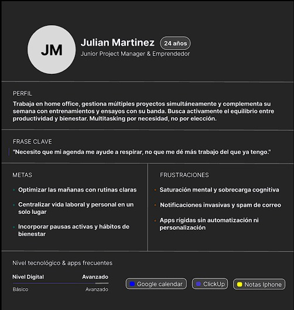
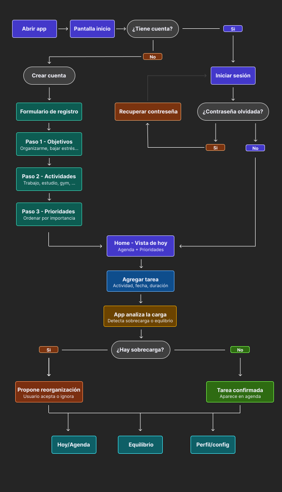
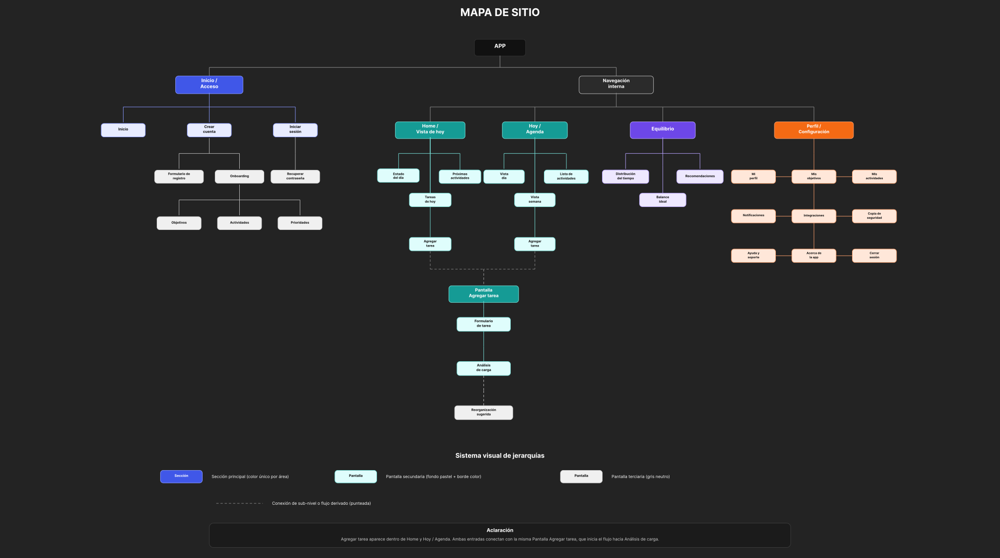

Objetivo general
Diseñar una app de organización personal que permita centralizar tareas, visualizar la carga diaria y recibir recomendaciones orientadas al equilibrio entre productividad y bienestar.
Parcial #1 · Diseño UX/UI
Organizá tu día sin desordenar tu vida.
App de organización personal para personas multitasking.
Presentación del producto
Equilibria surge a partir de una problemática cotidiana: muchas personas combinan estudio, trabajo, entrenamiento, vida social, proyectos personales y tareas diarias, pero las herramientas actuales se enfocan principalmente en productividad y no siempre ayudan a cuidar el equilibrio personal.
“Hoy organizamos lo que hacemos, pero no cómo vivimos.”
Equilibria nace como una app pensada para personas multitasking que necesitan ordenar su rutina sin sumar más carga mental. Su diferencial es combinar organización, análisis de carga y bienestar personal.
Objetivos de la app
Diseñar una experiencia que ayude al usuario a visualizar su carga diaria y recibir recomendaciones orientadas al equilibrio entre productividad y bienestar.
Diseñar una app de organización personal que permita centralizar tareas, visualizar la carga diaria y recibir recomendaciones orientadas al equilibrio entre productividad y bienestar.
Benchmarking
Notion, Todoist y Google Calendar permiten organizar actividades y recordatorios, pero ninguna se enfoca realmente en el bienestar del usuario multitasking.
| App | Facilidad | Organización | Bienestar | Puntaje |
|---|---|---|---|---|
| Notion | 2/5 | 5/5 | 1/5 | 3/5 |
| Todoist | 4/5 | 3/5 | 1/5 | 3.5/5 |
| Google Calendar | 5/5 | 3/5 | 1/5 | 4/5 |
Las aplicaciones actuales ayudan a organizar actividades, pero no abordan de forma integral el bienestar ni el equilibrio del usuario multitasking.
Investigación de usuarios
Se realizó una encuesta digital orientada a comprender hábitos, necesidades y problemáticas vinculadas a la organización diaria. La consigna pedía 10 encuestas, pero se obtuvieron 18 respuestas, ampliando la muestra.
Objetivo: comprender cómo una persona con múltiples responsabilidades organiza su rutina, qué herramientas utiliza, qué frustraciones encuentra y qué necesidades no resueltas podrían orientar el diseño de la app.
Ver grabación de entrevistaLos usuarios no buscan solamente productividad: buscan recuperar control, reducir estrés y encontrar equilibrio. La entrevista confirma la oportunidad de una app simple, práctica, adaptable y orientada tanto a organización como a bienestar.
User Persona

24 años · Junior Project Manager & Emprendedor
Trabaja en home office, gestiona múltiples proyectos simultáneamente y complementa su semana con entrenamiento, ensayos con su banda y vida social. Busca activamente el equilibrio entre productividad y bienestar. Es multitasking por necesidad, no por elección.
“Necesito que mi agenda me ayude a respirar, no que me dé más trabajo del que ya tengo.”
User Flow
El flujo contempla ingreso, creación de cuenta, onboarding personalizado, llegada a Home, carga de tareas y análisis de sobrecarga.

Mapa de sitio
El mapa organiza la app en dos grandes instancias: Inicio / Acceso y Navegación interna.

Inicio, crear cuenta, formulario de registro, onboarding, objetivos, actividades, prioridades, iniciar sesión y recuperar contraseña.
Home / Vista de hoy, Hoy / Agenda, Equilibrio, Perfil / Configuración y flujo Agregar tarea.
Arquitectura de la información
La arquitectura se pensó para reducir la carga cognitiva con etiquetas claras, prioridad de información y navegación simple.

Wireframes en baja fidelidad
Los wireframes fueron desarrollados en baja fidelidad para definir la estructura general de las pantallas, la disposición de los elementos y la adaptación responsive antes de avanzar hacia decisiones visuales más detalladas.
Ver wireframes en FigmaSistema visual / Estética propuesta
Equilibria debe transmitir organización, calma, foco y bienestar.
Conclusión
Equilibria responde a una problemática real detectada en la investigación: las personas multitasking no solo necesitan organizar tareas, sino también cuidar su equilibrio personal. A partir del benchmarking, las encuestas y la entrevista, se identificó una oportunidad clara para diseñar una app capaz de centralizar actividades, detectar sobrecarga y acompañar al usuario en una mejor distribución de su rutina.
Cierre
Organizá tu día sin desordenar tu vida.